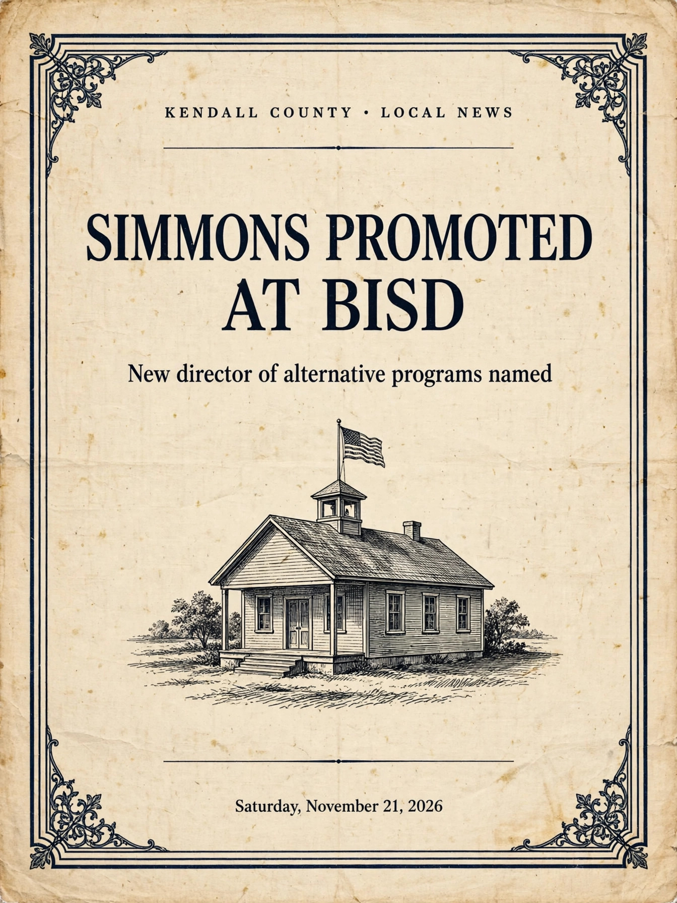

Kimberly Simmons named Boerne ISD director of alternative programs
Boerne ISD has promoted Kimberly Simmons to director of alternative programs, the district announced on Thursday, November 19.
In the role, Simmons will oversee Boerne Academy, the 18+ program housed at the Mitchell Learning Center, and the District Alternative Education Program, according to the district announcement. The District Alternative Education Program is the district's alternative campus placement for students assigned outside their regular campus.
Simmons is entering her 25th year in education, according to the district. She joined Boerne ISD in 2019 as a special education teacher and later served as assistant principal at Cibolo Creek Elementary for five years. She is currently an assistant principal.
She holds a Bachelor of Science in Elementary Education from the University of Mary Hardin-Baylor and a Master of Education in Mid-Management with Principal Certification from Concordia University in Austin, according to the district.
Superintendent Dr. Kristin Craft said the promotion reflects the district's practice of developing leaders from within its own staff, according to the district announcement.
Simmons begins the role on January 5, 2027.
Sources
- Boerne ISD, Kimberly Simmons Named Boerne ISD Director of Alternative Programs (November 19, 2026): https://www.parentsquare.com/schools/46819/rss_widget